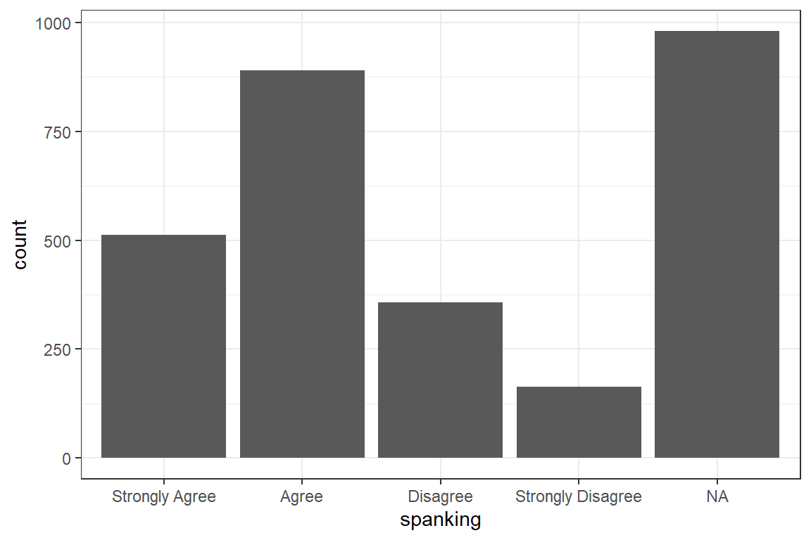
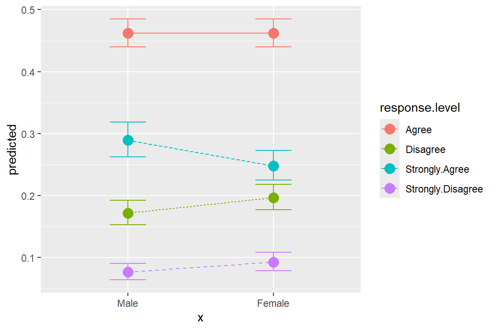
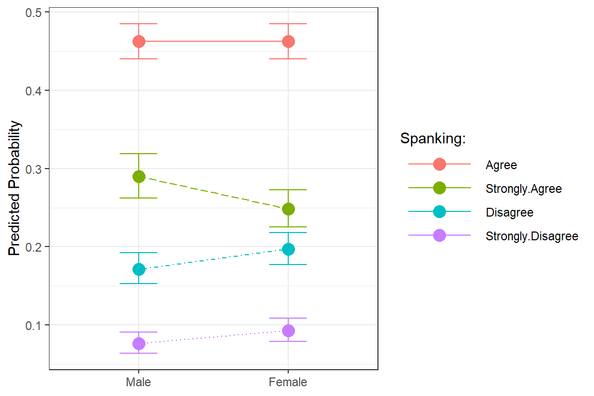
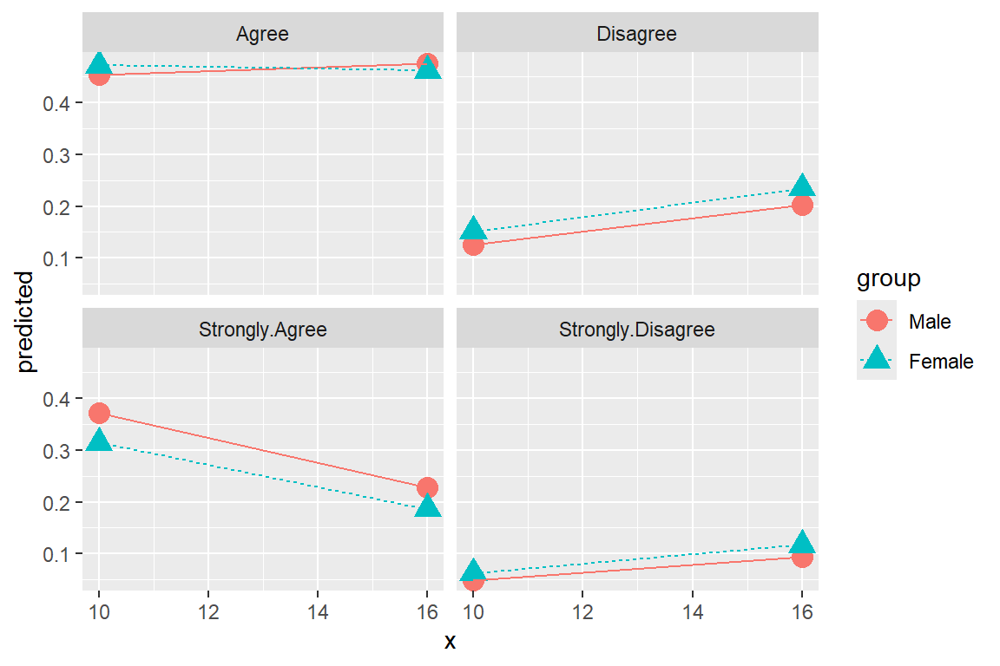
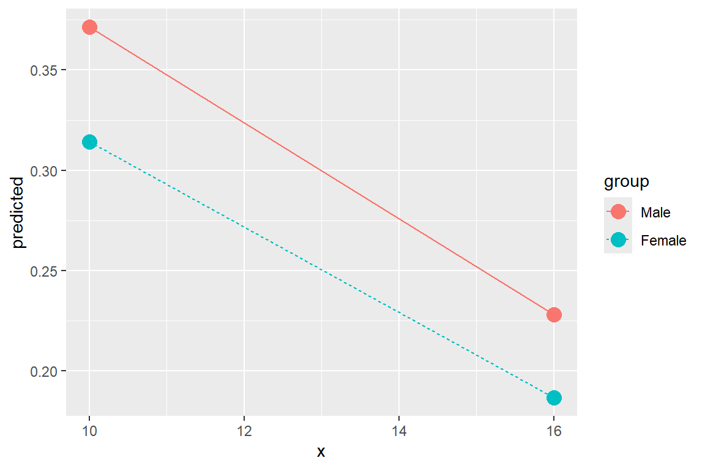
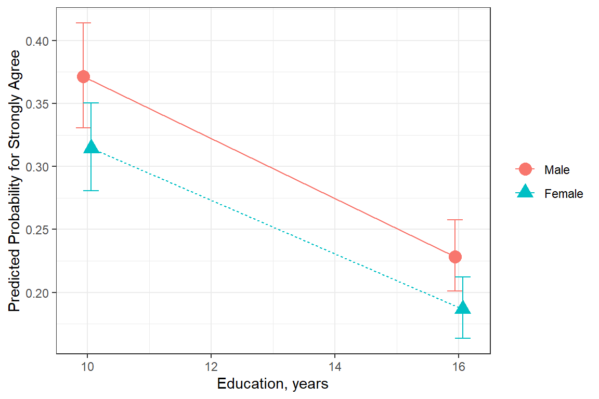
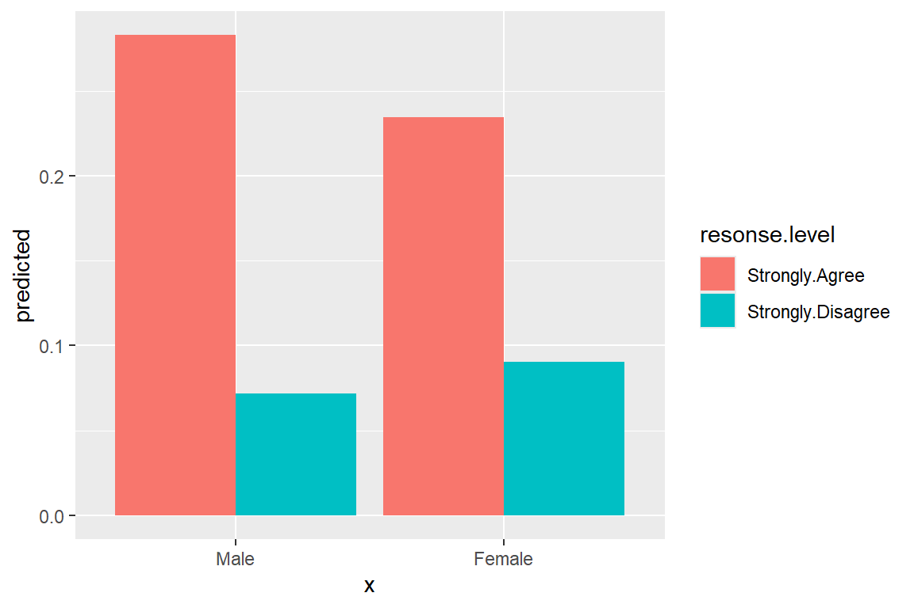

18 Ordered Logistic Regression - Ex: Spaking
18.1 PREPARATION
18.1.2 Background
This dataset comes from John Hoffman’s textbook: Regression Models for Categorical, Count, and Related Variables: An Applied Approach (2004) Amazon link, 2014 edition
Chapter 4: Ordered Logistic and Probit Regression Models
Dataset: The following example uses the SPSS data set gss.sav. The dependent variable of interest is labeled spanking.
” The pertinent question (
spanking) asks “Do you strongly agree, agree, disagree, or strongly disagree that it is sometimes necessary to discipline a child with a good, hard spanking?” The possible answers are coded as1= strongly agree,2= agree,3= disagree, and4= strongly disagree. A common hypothesis is that support for corporal punishment of children decreases at higher levels of education.”
18.1.3 Raw Dataset
df_gss <- haven::read_spss("https://raw.githubusercontent.com/CEHS-research/data/master/Hoffmann_datasets/gss.sav") %>%
haven::as_factor() %>%
haven::zap_formats() %>%
haven::zap_label() %>%
haven::zap_widths() %>%
dplyr::mutate_if(is.factor, ~forcats::fct_relabel(.x, stringr::str_to_title)) %>%
dplyr::mutate(spankingN = as.numeric(spanking)) %>% # numeric version: 1, 2, 3, 4
dplyr::mutate(polviewsN = as.numeric(polviews)) %>%
dplyr::mutate(educateF = as.factor(educate))tibble [2,903 × 23] (S3: tbl_df/tbl/data.frame)
$ id : num [1:2903] 402 1473 1909 334 1751 ...
$ marital : Factor w/ 5 levels "Married","Widowed",..: 3 2 2 2 1 3 5 1 5 2 ...
$ divorce : Factor w/ 2 levels "Yes","No": 1 2 2 1 2 1 2 1 2 2 ...
$ childs : Factor w/ 9 levels "0","1","2","3",..: 3 1 8 3 3 1 3 4 1 3 ...
$ age : num [1:2903] 54 24 75 41 37 40 36 33 18 35 ...
$ income : num [1:2903] 10 2 NA NA 12 NA 9 NA NA 6 ...
$ polviews : Factor w/ 7 levels "Extreme Liberal",..: 4 5 7 4 7 7 NA 4 4 4 ...
$ fund : Factor w/ 3 levels "Fundamentalist",..: NA NA NA NA NA NA NA NA NA NA ...
$ attend : Factor w/ 9 levels "Never","Less Than Once A Year",..: NA NA NA NA NA NA 7 4 3 4 ...
$ spanking : Factor w/ 4 levels "Strongly Agree",..: NA NA NA NA NA NA NA NA NA NA ...
$ totrelig : num [1:2903] NA NA NA NA NA NA NA 1000 NA NA ...
$ sei : num [1:2903] 38.9 29 29.1 29 38.1 ...
$ pasei : num [1:2903] NA 48.6 22.5 26.7 38.1 ...
$ volteer : num [1:2903] 0 0 0 1 1 0 0 0 1 0 ...
$ female : Factor w/ 2 levels "Male","Female": 2 1 2 2 1 2 2 2 2 1 ...
$ nonwhite : Factor w/ 2 levels "White","Non-White": 2 1 2 1 1 1 2 1 2 1 ...
$ prayer : Factor w/ 6 levels "Never","Less Than Once A Week",..: 5 4 5 4 4 4 5 4 4 4 ...
$ educate : num [1:2903] 12 17 8 12 12 NA 15 12 11 14 ...
$ volrelig : Factor w/ 2 levels "No","Yes": 1 1 1 2 2 1 1 1 1 1 ...
$ polview1 : Factor w/ 3 levels "Liberal","Moderate",..: 2 3 3 2 3 3 NA 2 2 2 ...
$ spankingN: num [1:2903] NA NA NA NA NA NA NA NA NA NA ...
$ polviewsN: num [1:2903] 4 5 7 4 7 7 NA 4 4 4 ...
$ educateF : Factor w/ 19 levels "0","3","4","5",..: 11 16 7 11 11 NA 14 11 10 13 ...18.1.4 Wrangle Data
df_gss_model <- df_gss %>%
dplyr::filter(complete.cases(educate, spanking)) # only include complete casesdf_gss_model %>%
dplyr::select("spanking_num" = spankingN,
"spanking_fct" = spanking,
female,
nonwhite,
"educate_num" = educate,
"educate_fct" = educateF,
income,
"polviews_num" = polviewsN,
"polviews_fct" = polviews) %>%
psych::headTail() %>%
flextable::flextable() %>%
flextable::separate_header() %>%
apaSupp::theme_apa(caption = "View Data") %>%
flextable::hline(part = "header", i = 1)spanking | female | nonwhite | educate | income | polviews | |||
|---|---|---|---|---|---|---|---|---|
num | fct | num | fct | num | fct | |||
2 | Agree | Male | White | 16 | 16 | 12 | 6 | Conservative |
2 | Agree | Female | White | 11 | 11 | 2 | 5 | Slight Conservative |
3 | Disagree | Male | White | 15 | 15 | 12 | 7 | Extreme Conservative |
3 | Disagree | Male | White | 14 | 14 | 4 | Middle Of The Road | |
... | ... | ... | ... | |||||
4 | Strongly Disagree | Female | Non-White | 16 | 16 | 12 | 2 | Liberal |
2 | Agree | Female | Non-White | 14 | 14 | 12 | 5 | Slight Conservative |
2 | Agree | Male | Non-White | 16 | 16 | 12 | 2 | Liberal |
4 | Strongly Disagree | Male | White | 16 | 16 | 5 | 3 | Slight Liberal |
18.2 EXPLORATORY DATA ANALYSIS
18.2.1 Entire Sample
df_gss %>%
dplyr::select(spanking) %>%
apaSupp::tab1(caption = "Hoffmann's Example 4.1 Summary of the Spanking Variable",
general_note = "Full sample included.")
| N = 2,903 |
|---|---|
spanking | |
Strongly Agree | 512 (26.6%) |
Agree | 890 (46.3%) |
Disagree | 357 (18.6%) |
Strongly Disagree | 164 (8.5%) |
Unknown | 980 |
Note. . . Full sample included. | |

18.2.2 By Education
df_gss %>%
dplyr::mutate(spanking = forcats::fct_explicit_na(spanking)) %>%
dplyr::select(spanking,
"Years" = educate,
"Factor" = educateF) %>%
apaSupp::tab1(split = "spanking",
total = FALSE,
caption = "Education by Spanking")
| Strongly Agree | Agree | Disagree | Strongly Disagree | (Missing) | p-value |
|---|---|---|---|---|---|---|
Years | 12.64 (2.96) | 13.40 (2.84) | 14.00 (2.74) | 14.24 (3.00) | 13.32 (2.95) | < .001*** |
Unknown | 1 | 3 | 1 | 0 | 4 | |
Factor | < .001*** | |||||
0 | 0 (0.0%) | 2 (0.2%) | 0 (0.0%) | 0 (0.0%) | 2 (0.2%) | |
3 | 5 (1.0%) | 0 (0.0%) | 0 (0.0%) | 0 (0.0%) | 3 (0.3%) | |
4 | 1 (0.2%) | 0 (0.0%) | 0 (0.0%) | 1 (0.6%) | 4 (0.4%) | |
5 | 4 (0.8%) | 5 (0.6%) | 0 (0.0%) | 1 (0.6%) | 3 (0.3%) | |
6 | 5 (1.0%) | 5 (0.6%) | 1 (0.3%) | 0 (0.0%) | 3 (0.3%) | |
7 | 7 (1.4%) | 8 (0.9%) | 0 (0.0%) | 1 (0.6%) | 7 (0.7%) | |
8 | 25 (4.9%) | 15 (1.7%) | 5 (1.4%) | 2 (1.2%) | 33 (3.4%) | |
9 | 15 (2.9%) | 20 (2.3%) | 7 (2.0%) | 4 (2.4%) | 23 (2.4%) | |
10 | 27 (5.3%) | 44 (5.0%) | 11 (3.1%) | 4 (2.4%) | 35 (3.6%) | |
11 | 39 (7.6%) | 42 (4.7%) | 16 (4.5%) | 5 (3.0%) | 53 (5.4%) | |
12 | 152 (29.7%) | 270 (30.4%) | 97 (27.2%) | 33 (20.1%) | 297 (30.4%) | |
13 | 56 (11.0%) | 90 (10.1%) | 41 (11.5%) | 19 (11.6%) | 90 (9.2%) | |
14 | 56 (11.0%) | 111 (12.5%) | 41 (11.5%) | 19 (11.6%) | 112 (11.5%) | |
15 | 19 (3.7%) | 47 (5.3%) | 14 (3.9%) | 14 (8.5%) | 59 (6.0%) | |
16 | 59 (11.5%) | 105 (11.8%) | 68 (19.1%) | 31 (18.9%) | 129 (13.2%) | |
17 | 13 (2.5%) | 45 (5.1%) | 14 (3.9%) | 6 (3.7%) | 42 (4.3%) | |
18 | 17 (3.3%) | 43 (4.8%) | 15 (4.2%) | 11 (6.7%) | 39 (4.0%) | |
19 | 3 (0.6%) | 15 (1.7%) | 8 (2.2%) | 2 (1.2%) | 13 (1.3%) | |
20 | 8 (1.6%) | 20 (2.3%) | 18 (5.1%) | 11 (6.7%) | 29 (3.0%) | |
Unknown | 1 | 3 | 1 | 0 | 4 | |
Note. Continuous variables are summarized with means (SD) and significant group differences assessed via independent one-way analysis of vaiance (ANOVA). Categorical variables are summarized with counts (%) and significant group differences assessed via Chi-squared tests for independence. | ||||||
* p < .05. ** p < .01. *** p < .001. | ||||||
18.2.3 Spanking by Sex
df_gss %>%
dplyr::select("sex" = female,
"Spanking" = spanking) %>%
apaSupp::tab1(split = "sex",
caption = "Summary of the Spanking Variable by Sex",
general_note = "Full sample included.")
| Total | Male | Female | p-value |
|---|---|---|---|---|
Spanking | .029* | |||
Strongly Agree | 512 (26.6%) | 243 (28.8%) | 269 (24.9%) | |
Agree | 890 (46.3%) | 388 (46.0%) | 502 (46.5%) | |
Disagree | 357 (18.6%) | 156 (18.5%) | 201 (18.6%) | |
Strongly Disagree | 164 (8.5%) | 56 (6.6%) | 108 (10.0%) | |
Unknown | 980 | 442 | 538 | |
Note. . . Full sample included. | ||||
* p < .05. ** p < .01. *** p < .001. | ||||
df_gss_model %>%
dplyr::select("sex" = female,
"Spanking" = spanking) %>%
apaSupp::tab1(split = "sex",
caption = "Summary of the Spanking Variable by Sex",
general_note = "Compleate casses only.")
| Total | Male | Female | p-value |
|---|---|---|---|---|
Spanking | .027* | |||
Strongly Agree | 511 (26.6%) | 243 (28.9%) | 268 (24.9%) | |
Agree | 887 (46.2%) | 387 (46.0%) | 500 (46.4%) | |
Disagree | 356 (18.6%) | 155 (18.4%) | 201 (18.7%) | |
Strongly Disagree | 164 (8.6%) | 56 (6.7%) | 108 (10.0%) | |
Note. . . Compleate casses only. | ||||
* p < .05. ** p < .01. *** p < .001. | ||||
18.3 LINEAR REGRESSION - a bad idea here
Linear regression is often ill-suited to fitting a likert rating, such as agreement.
18.3.1 Visualization
df_gss_model %>%
ggplot(aes(x = educate,
y = spankingN)) +
geom_count() + # point size relative to over-plotting
geom_smooth(method = "lm") + # add linear regression line (OLS)
theme_bw() +
labs(x = "Years of Formal Education",
y = "Spanking")
Figure 18.1
Hoffmann’s Figure 4.1
18.3.2 Fit the Model
Call:
lm(formula = spankingN ~ educate, data = df_gss_model)
Residuals:
Min 1Q Median 3Q Max
-1.44768 -0.79947 -0.06955 0.66036 2.41660
Coefficients:
Estimate Std. Error t value Pr(>|t|)
(Intercept) 1.367326 0.093670 14.597 < 2e-16 ***
educate 0.054018 0.006839 7.898 4.73e-15 ***
---
Signif. codes: 0 '***' 0.001 '**' 0.01 '*' 0.05 '.' 0.1 ' ' 1
Residual standard error: 0.8729 on 1916 degrees of freedom
Multiple R-squared: 0.03153, Adjusted R-squared: 0.03103
F-statistic: 62.38 on 1 and 1916 DF, p-value: 4.73e-15# A tibble: 2 × 5
Df `Sum Sq` `Mean Sq` `F value` `Pr(>F)`
<int> <dbl> <dbl> <dbl> <dbl>
1 1 47.5 47.5 62.4 4.73e-15
2 1916 1460. 0.762 NA NA 18.3.3 Tabulate Parameters
b | (SE) | p |
|
|
| |
|---|---|---|---|---|---|---|
(Intercept) | 1.37 | (0.09) | < .001*** | |||
educate | 0.05 | (0.01) | < .001*** | 0.18 | .032 | .032 |
R² | .032 | |||||
Adjusted R² | .031 | |||||
Note. N = 1918. = standardize coefficient; = semi-partial correlation; = partial correlation; p = significance from Wald t-test for parameter estimate. | ||||||
* p < .05. ** p < .01. *** p < .001. | ||||||
18.3.4 Residual Diagnostics
[[1]]
Figure 18.2
Hoffman’s Figures 4.2 and 4.3 Residual Diagnostics for a linear model on likery dependent variable - YUCK!
[[2]]
Figure 18.3
Hoffman’s Figures 4.2 and 4.3 Residual Diagnostics for a linear model on likery dependent variable - YUCK!
[[3]]
Figure 18.4
Hoffman’s Figures 4.2 and 4.3 Residual Diagnostics for a linear model on likery dependent variable - YUCK!
18.4 ORDERED LOGISTIC REGRESSION
df_gss_model %>%
dplyr::select("sex" = female,
"Spanking" = spanking) %>%
apaSupp::tab1(split = "sex",
caption = "Hoffmann's Example 4.3 Crosstabulate DV with Sex",
general_note = "Compleate casses only.")
| Total | Male | Female | p-value |
|---|---|---|---|---|
Spanking | .027* | |||
Strongly Agree | 511 (26.6%) | 243 (28.9%) | 268 (24.9%) | |
Agree | 887 (46.2%) | 387 (46.0%) | 500 (46.4%) | |
Disagree | 356 (18.6%) | 155 (18.4%) | 201 (18.7%) | |
Strongly Disagree | 164 (8.6%) | 56 (6.7%) | 108 (10.0%) | |
Note. . . Compleate casses only. | ||||
* p < .05. ** p < .01. *** p < .001. | ||||
18.5 Proportional-odds (ordinal) Logistic Regression
This type of logisit regression model forces the predictors to have similar relationship with the outcome (slopes), but different means (intercepts). This is called the proportional odds assumption.
18.5.1 Fit Model 1: Sex
Use polr() function in the base \(R\) MASS package. While outcome variable (dependent variable, “Y”) may be a regular factor, it is preferable to specify it as an ordered factor.
Call:
MASS::polr(formula = spanking ~ female, data = df_gss_model)
Coefficients:
Value Std. Error t value
femaleFemale 0.2116 0.08532 2.48
Intercepts:
Value Std. Error t value
Strongly Agree|Agree -0.8967 0.0694 -12.9114
Agree|Disagree 1.1094 0.0711 15.6078
Disagree|Strongly Disagree 2.4922 0.0958 26.0026
Residual Deviance: 4719.394
AIC: 4727.394 18.5.2 Extract Parameters
18.5.2.1 Logit Scale
Strongly Agree|Agree Agree|Disagree
-0.8966862 1.1093754
Disagree|Strongly Disagree
2.4921855 femaleFemale
0.2116244 2.5 % 97.5 %
0.04451894 0.37901780 18.5.2.2 Odds-Ratio Scale
Strongly Agree|Agree Agree|Disagree
0.4079192 3.0324638
Disagree|Strongly Disagree
12.0876653 femaleFemale
1.235684 2.5 % 97.5 %
1.045525 1.460849 18.5.2.3 Predicted Probabilities
model: spanking ~ female
female effect (probability) for Strongly Agree
female
Male Female
0.289732 0.248186
female effect (probability) for Agree
female
Male Female
0.4622807 0.4623011
female effect (probability) for Disagree
female
Male Female
0.1715795 0.1967672
female effect (probability) for Strongly Disagree
female
Male Female
0.07640782 0.09274572 18.5.3 Tabulate parameters
texreg::knitreg(fit_polr_1,
custom.model.name = c("b (SE)"),
custom.coef.map = list("femaleFemale" = "Female vs. Male",
"Strongly Agree|Agree" = "strongly agree|agree",
"Agree|Disagree" = "agree|disagree",
"Disagree|Strongly Disagree" = "disagree|strongly disagree"),
groups = list("Predictors" = 1,
"Cut Values (i.e. threasholds)" = 2:4),
caption = "Hoffmann's Example 4.4 Ordered Logistic Regression",
caption.above = TRUE,
single.row = TRUE,
digits = 4)| b (SE) | |
|---|---|
| Predictors | |
| Female vs. Male | 0.2116 (0.0853)* |
| Cut Values (i.e. threasholds) | |
| strongly agree|agree | -0.8967 (0.0694)*** |
| agree|disagree | 1.1094 (0.0711)*** |
| disagree|strongly disagree | 2.4922 (0.0958)*** |
| AIC | 4727.3944 |
| BIC | 4749.6306 |
| Log Likelihood | -2359.6972 |
| Deviance | 4719.3944 |
| Num. obs. | 1918 |
| ***p < 0.001; **p < 0.01; *p < 0.05 | |
18.5.4 Predicted Probabilities
# A tibble: 8 × 7
x predicted std.error conf.low conf.high response.level group
<fct> <dbl> <dbl> <dbl> <dbl> <chr> <fct>
1 Male 0.290 0.0694 0.263 0.319 Strongly.Agree 1
2 Female 0.248 0.0647 0.225 0.273 Strongly.Agree 1
3 Male 0.462 0.0460 0.440 0.485 Agree 1
4 Female 0.462 0.0459 0.440 0.485 Agree 1
5 Male 0.172 0.0708 0.153 0.192 Disagree 1
6 Female 0.197 0.0653 0.177 0.218 Disagree 1
7 Male 0.0764 0.0958 0.0642 0.0908 Strongly.Disagree 1
8 Female 0.0927 0.0889 0.0791 0.109 Strongly.Disagree 1 # A tibble: 4 × 7
x predicted std.error conf.low conf.high response.level group
<fct> <dbl> <dbl> <dbl> <dbl> <chr> <fct>
1 Female 0.248 0.0647 0.225 0.273 Strongly.Agree 1
2 Female 0.462 0.0459 0.440 0.485 Agree 1
3 Female 0.197 0.0653 0.177 0.218 Disagree 1
4 Female 0.0927 0.0889 0.0791 0.109 Strongly.Disagree 1 18.5.5 Plot Predicted Probabilities
ggeffects::ggeffect(model = fit_polr_1,
terms = c("female")) %>% # x-axis
data.frame() %>%
ggplot(aes(x = x,
y = predicted,
group = response.level,
color = response.level)) +
geom_errorbar(aes(ymin = conf.low,
ymax = conf.high),
width = .25) +
geom_point(size = 4) +
geom_line(aes(linetype = response.level)) 
ggeffects::ggeffect(model = fit_polr_1,
terms = c("female")) %>% # x-axis
data.frame() %>%
dplyr::mutate(response.level = response.level %>%
forcats::fct_reorder(predicted) %>%
forcats::fct_rev()) %>%
ggplot(aes(x = x,
y = predicted,
group = response.level,
color = response.level)) +
geom_errorbar(aes(ymin = conf.low,
ymax = conf.high),
width = .25) +
geom_point(size = 4) +
geom_line(aes(linetype = response.level)) +
theme_bw() +
labs(x = NULL,
y = "Predicted Probability",
color = "Spanking:",
shape = "Spanking:",
linetype = "Spanking:") +
theme(legend.key.width = unit(2, "cm")) +
scale_linetype_manual(values = c("solid", "longdash", "dotdash", "dotted")) +
scale_shape_manual(values = c(0, 1, 2, 8))
18.5.6 Model Fit and Variance Explained
# A tibble: 2 × 7
Model `Resid. df` `Resid. Dev` Test ` Df` `LR stat.` `Pr(Chi)`
<chr> <dbl> <dbl> <chr> <dbl> <dbl> <dbl>
1 1 1915 4726. "" NA NA NA
2 female 1914 4719. "1 vs 2" 1 6.16 0.0130Can't calculate log-loss.# A tibble: 1 × 6
AIC AICc BIC R2_Nagelkerke RMSE Sigma
<dbl> <dbl> <dbl> <dbl> <dbl> <dbl>
1 4727. 4727. 4750. 0.00351 2.05 1.57 Nagelkerke's R2: 0.00418.5.7 Assumptions
18.5.7.1 Proportional Odds: Brant Test
The poTest function implements tests proposed by Brant (1990) for proportional odds for logistic models fit by the polr() function in the MASS package.
Tests for Proportional Odds
MASS::polr(formula = spanking ~ female, data = df_gss_model)
b[polr] b[>Strongly Agree] b[>Agree] b[>Disagree] Chisquare df
Overall 3.01 2
femaleFemale 0.212 0.204 0.183 0.446 3.01 2
Pr(>Chisq)
Overall 0.22
femaleFemale 0.22A significant test statistics provides evidence that the parallel regression assumption has been violated!
18.5.8 Fit Model 2: Sex + Covars
fit_polr_2 <- MASS::polr(spanking ~ female + educate + polviewsN,
data = df_gss_model)
summary(fit_polr_2)Call:
MASS::polr(formula = spanking ~ female + educate + polviewsN,
data = df_gss_model)
Coefficients:
Value Std. Error t value
femaleFemale 0.2532 0.08825 2.869
educate 0.1153 0.01564 7.374
polviewsN -0.2215 0.03248 -6.818
Intercepts:
Value Std. Error t value
Strongly Agree|Agree -0.2977 0.2671 -1.1146
Agree|Disagree 1.7845 0.2706 6.5935
Disagree|Strongly Disagree 3.1926 0.2793 11.4312
Residual Deviance: 4396.504
AIC: 4408.504
(97 observations deleted due to missingness)18.5.9 Extract Parameters
18.5.9.1 Logit Scale
Strongly Agree|Agree Agree|Disagree
-0.2976843 1.7844863
Disagree|Strongly Disagree
3.1926342 femaleFemale educate polviewsN
0.2532132 0.1152980 -0.2214577 2.5 % 97.5 %
femaleFemale 0.08039420 0.4263963
educate 0.08472724 0.1460403
polviewsN -0.28526298 -0.157904618.5.10 Tabulate parameters
texreg::knitreg(fit_polr_2,
custom.model.name = c("b (SE)"),
custom.coef.map = list("femaleFemale" = "Female vs. Male",
"educate" = "Years of Education",
"polviewsN" = "Level of Polytical Views",
"Strongly Agree|Agree" = "Strongly Agree|Agree",
"Agree|Disagree" = "Agree|Disagree",
"Disagree|Strongly Disagree" = "Disagree|Strongly Disagree"),
groups = list("Predictors" = 1:3,
"Cut Values" = 4:6),
caption = "Hoffmann's Example 4.7 Ordered Logistic Regression",
caption.above = TRUE,
single.row = TRUE,
digits = 4)| b (SE) | |
|---|---|
| Predictors | |
| Female vs. Male | 0.2532 (0.0883)** |
| Years of Education | 0.1153 (0.0156)*** |
| Level of Polytical Views | -0.2215 (0.0325)*** |
| Cut Values | |
| Strongly Agree|Agree | -0.2977 (0.2671) |
| Agree|Disagree | 1.7845 (0.2706)*** |
| Disagree|Strongly Disagree | 3.1926 (0.2793)*** |
| AIC | 4408.5038 |
| BIC | 4441.5466 |
| Log Likelihood | -2198.2519 |
| Deviance | 4396.5038 |
| Num. obs. | 1821 |
| ***p < 0.001; **p < 0.01; *p < 0.05 | |
18.5.11 Predicted Probabilities
The
ggeffectspackage computes estimated marginal means (predicted values) for the response, at the margin of specific values or levels from certain model terms, i.e. it generates predictions by a model by holding the non-focal variables constant and varying the focal variable(s).
ggpredict()usespredict()for generating predictions- factors: uses the reference level
ggeffect()computes marginal effects by internally callingeffects::Effect()- factors: compute a kind of “average” value, which represents the proportions of each factor’s category
ggemmeans()usesemmeans::emmeans()- factors: compute a kind of “average” value, which represents the proportions of each factor’s category
Use condition to set a specific level for factors in ggemmeans(), so factors are not averaged over their categories, but held constant at a given level.
ggeffects::ggpredict()Adjusted for: * educate = 13.51 The grand mean value * polviewsN = 4.17 The grand mean value
## Hoffmann's Example 4.8 (continues...approximated)
ggeffects::ggpredict(model = fit_polr_2,
terms = c("female")) # A tibble: 8 × 7
x predicted std.error conf.low conf.high response.level group
<fct> <dbl> <dbl> <dbl> <dbl> <chr> <fct>
1 Male 0.283 0.253 0.193 0.393 Strongly Agree 1
2 Male 0.477 0.253 0.357 0.600 Agree 1
3 Male 0.169 0.253 0.110 0.250 Disagree 1
4 Male 0.0718 0.253 0.0450 0.113 Strongly Disagree 1
5 Female 0.234 0.276 0.151 0.344 Strongly Agree 1
6 Female 0.476 0.276 0.346 0.610 Agree 1
7 Female 0.199 0.276 0.126 0.299 Disagree 1
8 Female 0.0906 0.276 0.0548 0.146 Strongly Disagree 1 # A tibble: 8 × 7
x predicted std.error conf.low conf.high response.level group
<fct> <dbl> <dbl> <dbl> <dbl> <chr> <fct>
1 Male 0.283 0.253 0.193 0.393 Strongly Agree 1
2 Male 0.477 0.253 0.357 0.600 Agree 1
3 Male 0.169 0.253 0.110 0.250 Disagree 1
4 Male 0.0718 0.253 0.0450 0.113 Strongly Disagree 1
5 Female 0.234 0.276 0.151 0.344 Strongly Agree 1
6 Female 0.476 0.276 0.346 0.610 Agree 1
7 Female 0.199 0.276 0.126 0.299 Disagree 1
8 Female 0.0906 0.276 0.0548 0.146 Strongly Disagree 1 18.6 Hoffmann’s Example 4.8 (continues…approximated)
ggeffects::ggpredict()Adjusted for: * female = male The reference category * polviewsN = 4.17 The grand mean value
ggeffects::ggpredict(model = fit_polr_2,
terms = c("educate [10, 16]", # 1st = x
"female")) %>% # 2nd = group
data.frame() %>%
dplyr::filter(group == "Male")# A tibble: 8 × 7
x predicted std.error conf.low conf.high response.level group
<dbl> <dbl> <dbl> <dbl> <dbl> <chr> <fct>
1 10 0.371 0.209 0.282 0.471 Strongly Agree Male
2 10 0.454 0.209 0.356 0.556 Agree Male
3 10 0.125 0.209 0.0868 0.177 Disagree Male
4 10 0.0491 0.209 0.0331 0.0722 Strongly Disagree Male
5 16 0.228 0.287 0.144 0.342 Strongly Agree Male
6 16 0.475 0.287 0.340 0.614 Agree Male
7 16 0.203 0.287 0.127 0.309 Disagree Male
8 16 0.0935 0.287 0.0555 0.153 Strongly Disagree Male
ggeffects::ggeffect()Adjusted for: * female computed a kind of “average” value, which represents the proportions of male/female * polviewsN = 4.17 The grand mean value
# A tibble: 8 × 7
x predicted std.error conf.low conf.high response.level group
<dbl> <dbl> <dbl> <dbl> <dbl> <chr> <fct>
1 10 0.339 0.0744 0.307 0.372 Strongly.Agree 1
2 16 0.204 0.0692 0.183 0.227 Strongly.Agree 1
3 10 0.465 0.0498 0.441 0.490 Agree 1
4 16 0.469 0.0487 0.445 0.493 Agree 1
5 10 0.139 0.0793 0.122 0.159 Disagree 1
6 16 0.221 0.0663 0.199 0.244 Disagree 1
7 10 0.0561 0.105 0.0461 0.0682 Strongly.Disagree 1
8 16 0.106 0.0885 0.0908 0.124 Strongly.Disagree 1 ggeffects::ggemmeans(model = fit_polr_2,
terms = c("educate [10, 16]"),
condition = c(female = "Female")) %>%
data.frame()# A tibble: 8 × 7
x predicted std.error conf.low conf.high response.level group
<dbl> <dbl> <dbl> <dbl> <dbl> <fct> <fct>
1 10 0.314 0.0178 0.279 0.349 Strongly Agree 1
2 10 0.472 0.0124 0.448 0.496 Agree 1
3 10 0.151 0.0107 0.130 0.172 Disagree 1
4 10 0.0624 0.00641 0.0498 0.0749 Strongly Disagree 1
5 16 0.187 0.0124 0.162 0.211 Strongly Agree 1
6 16 0.461 0.0125 0.437 0.486 Agree 1
7 16 0.235 0.0130 0.209 0.260 Disagree 1
8 16 0.117 0.0100 0.0976 0.137 Strongly Disagree 1 Predictions for specific values: females with 10 or 16 years education
ggeffects::ggeffect(model = fit_polr_2,
terms = c("female", # 1st var = `x`
"educate [10, 16]")) %>% # 2nd var = `group`
data.frame()# A tibble: 16 × 7
x predicted std.error conf.low conf.high response.level group
<fct> <dbl> <dbl> <dbl> <dbl> <chr> <dbl>
1 Male 0.371 0.0909 0.331 0.414 Strongly.Agree 10
2 Female 0.314 0.0825 0.281 0.350 Strongly.Agree 10
3 Male 0.228 0.0818 0.201 0.258 Strongly.Agree 16
4 Female 0.187 0.0820 0.163 0.212 Strongly.Agree 16
5 Male 0.454 0.0544 0.428 0.481 Agree 10
6 Female 0.472 0.0496 0.448 0.496 Agree 10
7 Male 0.475 0.0489 0.451 0.499 Agree 16
8 Female 0.461 0.0504 0.437 0.486 Agree 16
9 Male 0.125 0.0937 0.106 0.147 Disagree 10
10 Female 0.151 0.0834 0.132 0.174 Disagree 10
11 Male 0.203 0.0756 0.180 0.228 Disagree 16
12 Female 0.235 0.0721 0.210 0.261 Disagree 16
13 Male 0.0491 0.120 0.0392 0.0613 Strongly.Disagree 10
14 Female 0.0624 0.110 0.0509 0.0762 Strongly.Disagree 10
15 Male 0.0935 0.101 0.0780 0.112 Strongly.Disagree 16
16 Female 0.117 0.0968 0.0990 0.138 Strongly.Disagree 16ggeffects::ggemmeans(model = fit_polr_2,
terms = "female",
condition = c(educate = 12,
polviewsN = 4.5)) # A tibble: 8 × 7
x predicted std.error conf.low conf.high response.level group
<fct> <dbl> <dbl> <dbl> <dbl> <fct> <fct>
1 Male 0.335 0.0169 0.302 0.368 Strongly Agree 1
2 Male 0.467 0.0124 0.442 0.491 Agree 1
3 Male 0.141 0.00969 0.122 0.160 Disagree 1
4 Male 0.0570 0.00571 0.0458 0.0682 Strongly Disagree 1
5 Female 0.281 0.0141 0.254 0.309 Strongly Agree 1
6 Female 0.477 0.0121 0.453 0.501 Agree 1
7 Female 0.169 0.0101 0.149 0.189 Disagree 1
8 Female 0.0723 0.00653 0.0595 0.0851 Strongly Disagree 1 18.6.1 Plot Predicted Probabilites
ggeffects::ggeffect(model = fit_polr_2,
terms = c("educate [10, 16]", # x-axis
"female")) %>% # lines by group
data.frame() %>%
ggplot(aes(x = x,
y = predicted,
color = group,
shape = group)) +
geom_point(size = 4) +
geom_line(aes(linetype = group)) +
facet_wrap(~ response.level)
ggeffects::ggeffect(model = fit_polr_2,
terms = c("educate [10, 16]", # x-axis
"female")) %>% # lines by group
data.frame() %>%
dplyr::filter(response.level == "Strongly.Agree") %>%
ggplot(aes(x = x,
y = predicted,
color = group)) +
geom_point(size = 4) +
geom_line(aes(linetype = group)) 
ggeffects::ggeffect(model = fit_polr_2,
terms = c("educate [10, 16]", # x-axis
"female")) %>% # lines by group
data.frame() %>%
dplyr::filter(response.level == "Strongly.Agree") %>%
ggplot(aes(x = x,
y = predicted,
color = group,
shape = group)) +
geom_errorbar(aes(ymin = conf.low,
ymax = conf.high),
width = .5,
position = position_dodge(width =.25)) +
geom_point(size = 4,
position = position_dodge(width =.25)) +
geom_line(aes(linetype = group),
position = position_dodge(width =.25)) +
theme_bw() +
labs(x = "Education, years",
y = "Predicted Probability for Strongly Agree",
color = NULL,
shape = NULL,
linetype = NULL)
ggeffects::ggeffect(model = fit_polr_2,
terms = c("educate [10, 16]", # x-axis
"female")) %>% # lines by group
data.frame() %>%
dplyr::mutate(group = forcats::fct_rev(group)) %>%
dplyr::filter(response.level == "Strongly.Agree") %>%
ggplot(aes(x = x,
y = predicted,
shape = group)) +
geom_errorbar(aes(ymin = conf.low,
ymax = conf.high),
width = .25,
position = position_dodge(.2)) +
geom_point(size = 4,
position = position_dodge(.2)) +
geom_line(aes(linetype = group),
size = 1,
position = position_dodge(.2)) +
theme_bw() +
theme(legend.position = c(1, 1),
legend.justification = c(1.1, 1.1),
legend.key.width = unit(2, "cm"),
legend.background = element_rect(color = "black")) +
scale_linetype_manual(values = c("solid", "longdash")) +
labs(x = "Years of Formal Education",
y = "Predicted Probabilit for\nResponding 'Strongly Agree'",
color = NULL,
shape = NULL,
linetype = NULL,
title = "Adjusted Predictions: Strongly Agree Spanking is Appropriate")
Figure 18.5
Hoffmann’s Figure 4.4
ggeffects::ggeffect(model = fit_polr_2,
terms = c("female")) %>% # lines by group
data.frame() %>%
dplyr::filter(response.level %in% c("Strongly.Agree",
"Strongly.Disagree")) %>%
dplyr::mutate(resonse.level = factor(response.level)) %>%
ggplot(aes(x = x,
y = predicted,
fill = resonse.level)) +
geom_col(position = position_dodge()) 
ggeffects::ggeffect(model = fit_polr_2,
terms = c("female")) %>% # lines by group
data.frame() %>%
dplyr::filter(response.level %in% c("Strongly.Agree",
"Strongly.Disagree")) %>%
dplyr::mutate(resonse.level = factor(response.level)) %>%
ggplot(aes(x = forcats::fct_rev(x),
y = predicted,
fill = resonse.level)) +
geom_col(position = position_dodge()) +
theme_bw() +
theme(legend.position = "bottom") +
scale_fill_manual(values = c("gray30", "gray70")) +
labs(x = NULL,
y = "Predicted Probability of Response",
fill = NULL,
title = "Attitues towareds Spanking, by Sex")
Figure 18.6
Hoffmann’s Figure 4.5
18.6.2 Model Fit and Variance Explained
fit_polr_1redeo <- MASS::polr(spanking ~ female,
data = df_gss_model %>%
dplyr::filter(complete.cases(educate, polviewsN)))# A tibble: 2 × 7
Model `Resid. df` `Resid. Dev` Test ` Df` `LR stat.` `Pr(Chi)`
<chr> <dbl> <dbl> <chr> <dbl> <dbl> <dbl>
1 female 1817 4501. "" NA NA NA
2 female + educate … 1815 4397. "1 v… 2 105. 0# A tibble: 2 × 9
Name Model R2_Nagelkerke RMSE Sigma AIC_wt AICc_wt BIC_wt
<chr> <chr> <dbl> <dbl> <dbl> <dbl> <dbl> <dbl>
1 fit_polr_2 polr 0.0647 2.06 1.56 1 e+ 0 1 e+ 0 1 e+ 0
2 fit_polr_1redeo polr 0.00384 2.06 1.57 1.32e-22 1.34e-22 3.26e-20
# ℹ 1 more variable: Performance_Score <dbl>18.6.3 Assumptions
18.6.3.1 Proportional Odds: Brant Test
The poTest function implements tests proposed by Brant (1990) for proportional odds for logistic models fit by the polr() function in the MASS package.
Tests for Proportional Odds
MASS::polr(formula = spanking ~ female + educate + polviewsN,
data = df_gss_model)
b[polr] b[>Strongly Agree] b[>Agree] b[>Disagree] Chisquare df
Overall 8.80 6
femaleFemale 0.2532 0.2342 0.2180 0.4719 2.64 2
educate 0.1153 0.1248 0.1036 0.0927 1.17 2
polviewsN -0.2215 -0.1622 -0.2558 -0.2872 4.85 2
Pr(>Chisq)
Overall 0.185
femaleFemale 0.268
educate 0.558
polviewsN 0.089 .
---
Signif. codes: 0 '***' 0.001 '**' 0.01 '*' 0.05 '.' 0.1 ' ' 1A significant test statistics provides evidence that the parallel regression assumption has been violated!